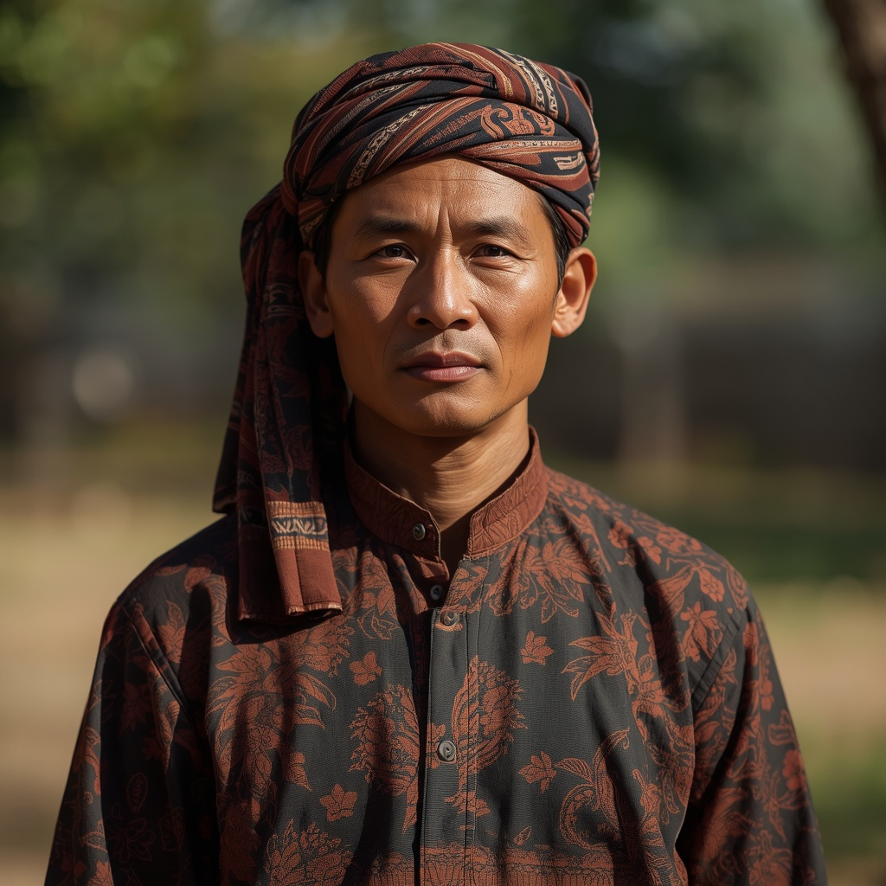

🧑🤝🧑 世界の民族・人びと
People of the World。国境を越えて暮らす人びとを、地域ごとに紹介します。伝統だけでなく、今の暮らしも一緒に。

ジャワ人
🗣 使用言語
ジャワ語、インドネシア語
👥 人口の目安
約1億人(世界最大規模の単一民族集団の一つ)
👘 伝統衣装
男性の正装はサロン(腰布)、立て襟シャツ、上着に頭巾「ブランコン」を組み合わせ、女性は更紗染めの「バティック」を用いた服を着用する。
🏠 住居
農村部の伝統家屋は竹を主材料とし、可動式の間仕切りを持ち、屋根はヤシの葉や瓦で葺かれる造りが多い。
🍲 食文化
米を主食とし、サテ(串焼き)、サンバル(辛味調味料)、ジョグジャカルタ名物のグドゥッ(若いジャックフルーツの煮込み)、ソロのナシリウェット(ココナツミルクご飯)など地域色豊かな料理がある。
🎵 音楽・踊り
青銅の打楽器群からなる伝統音楽「ガムラン」と、影絵人形芝居「ワヤン・クリ」が代表的で、短剣クリスやろんげん舞踊とともにジャワ文化を象徴する。
🎉 行事・祭り
預言者生誕を祝う「スカテン」やジョグジャカルタ王宮の年中行事「グレベッグ」など、イスラムと宮廷文化が融合した儀礼が各地で行われる。
🙏 信仰・価値観
多くはイスラム教徒だが、ヒンドゥー・仏教時代からの信仰やジャワ独自の精霊信仰(クジャウェン)が融合しており、調和・謙譲・目上への敬意を重んじる価値観が生活文化に根付いている。
📜 歴史
ジャワ人はインドネシアのジャワ島中部・東部を故地とするオーストロネシア系の民族で、古代にはヒンドゥー教・仏教王国(マタラム王国など)が栄え、ボロブドゥールなどの遺跡を残した。15世紀以降イスラム教が広まり、現在はインドネシアの人口構成上最大の民族集団となっている。
🏙 現代の暮らし
現在は政治・経済・文化の中心であるジャワ島を中心に、都市化と近代化が進む一方、バティックやガムランなど伝統文化はユネスコ無形文化遺産にも登録され継承されている。
🇯🇵 日本との関係
ジャワ更紗(バティック)やガムラン音楽は日本でも紹介され、大学や文化イベントでガムラン演奏団体が活動するなど、芸能・工芸を通じた交流が続いている。
🌍 関連する国

出典: https://en.wikipedia.org/wiki/Javanese_people(2026-09-01時点) / https://factsanddetails.com/indonesia/People_and_Life/sub6_2e/entry-9686.html(2026-09-01時点)